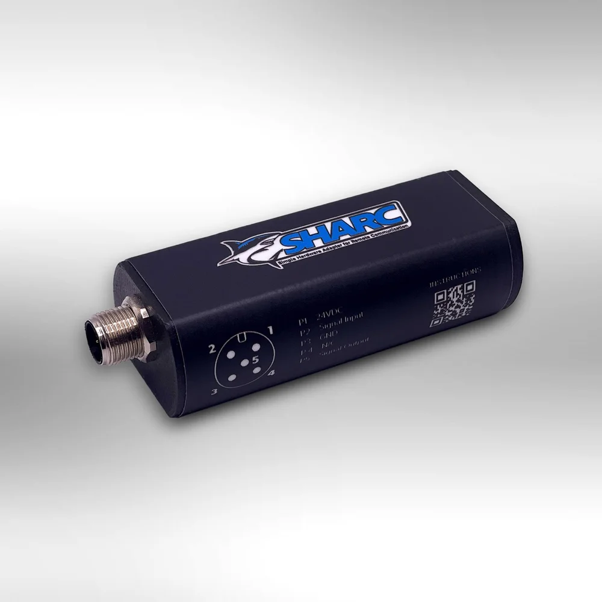
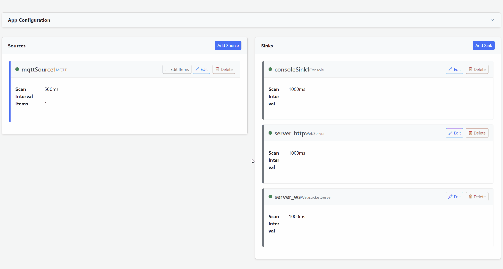

“We're growing faster than we can hire.”
Demand is up, but skilled people are hard to find — and getting them up to speed takes months.
Industrial IoT · Systems Engineering
Hitting growing pains? The fix usually isn't more people — it's better systems. Mr. IIoT is an industrial IoT and systems engineering firm that connects your machines and automates the busywork, so the team you already have can do more.

Sound familiar?
Demand is up, but skilled people are hard to find — and getting them up to speed takes months.
Re-keying orders, logs, and reports by hand eats time you can't bill — and invites mistakes.
ERP, machines, spreadsheets, email — your staff bridges the gaps by hand, every single day.
Without real-time visibility, utilization, downtime, and cost are a guess until month-end.
New EDI, new labels, new paperwork — growth keeps creating manual work instead of leverage.
Maintenance is reactive. By the time a problem shows up on a report, the line has already stopped.
The payoff
We engineer the systems that take busywork off your people — and give you the visibility to run leaner as you grow.
Kill manual data entry, paperwork, and re-keying between systems — free your people for real work.
Take on more orders, machines, and customers with the headcount you already have.
Real-time visibility into uptime, utilization, and cost — so you can run lean and decide on facts.
Integrated machines, software, and business systems — so your team stops being the glue.
How we engineer it
01 · Connectivity
The problem: a five-figure OEM quote just to get one machine online — and half your assets speak protocols nothing else understands.
Whether you need to add a brand-new measurement or tap a machine you already own, Mr. IIoT gets the signal out — two complementary ways.

The universal IoT sensor adapter connects any digital or analog industrial sensor, from any manufacturer, to your network — for a fraction of an OEM quote. Measure throughput, pressure, temperature, current, vibration, or tap an existing PLC output. One customer's OEM quote was tenfold the cost of two SHARCs.
Data In Motion Enterprise is the universal translator for industrial data. A high-performance connector runs on the plant floor and speaks your equipment's native protocols — turning PLCs, robots, CNCs, databases, and message brokers into one unified stream.
A plethora of protocols — 50+ and counting, including:
02 · Data Collection
The problem: your data is trapped in a black box you don't control — and you can't switch tools without breaking everything.
Readings stream off the floor in real time as open, modern payloads — JSON transported over MQTT. Alert on abnormal readings, record equipment event changes, and build a faithful record of how your machines actually run. The data is yours, in an open format, with no proprietary lock-in at the source.
03 · Integration
The problem: raw machine data is useless until it arrives — cleaned, shaped, and reachable — in the systems people already use.
Once you're connected, two complementary tools turn that stream into something every system can use — whether it needs data pushed to it or wants to ask for it.

DIME's DataOps engine normalizes, transforms, and routes the unified stream to wherever it needs to go — historians, brokers, databases, and analytics tools — low-code and no-code. Mismatched assets finally feed one coherent picture.
i3X (Industrial Information Interoperability Exchange) turns disparate sources — SQL databases, MTConnect, OPC-UA, CSV/Excel — into standardized, queryable REST APIs with semantic models, no custom code. Now anything can simply ask for the data it needs.
04 · Analytics
The problem: downtime blindsides you, and the floor still runs on gut feel instead of fact.
With data flowing, you can finally see your operation. Real-time monitoring, custom dashboards, and predictive analytics turn machine data into actionable insight — so you can catch failures before the line stops, improve quality, and make fact-based decisions. Your data scales as you do, and stays yours.

05 · Support
The problem: when a machine goes down, the answer is buried in a 400-page manual, an old email, or a video nobody can find — and the call comes at 2 a.m.
Tracebook is AI tech support for machine OEMs. It turns your manuals, schematics, and resolved tickets into a searchable knowledge base that answers diagnostic questions in seconds — every reply linked to the exact source. White-labeled under your brand, scoped to each machine's serial number, so customers get help that's actually theirs.
The Mr. IIoT toolkit
The universal IoT sensor adapter — get any sensor on any network.
Connectivity · IntegrationUniversal translator: 50+ protocols in, normalized and routed anywhere.
IntegrationTurn any data source into a standardized, queryable REST API.
SupportAI tech support for machine OEMs — cited answers from your manuals.
Proof on the plant floor
Mr. IIoT engineers the systems — connectivity, integration, and automation — that help manufacturers grow without growing headcount.